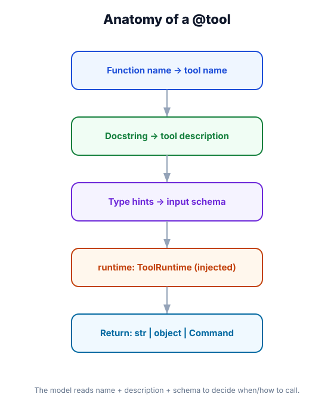

Tools — Creating & Registering
What you'll learn: How to create tools using the @tool decorator, what makes a well-designed tool (name, description, schema), how tools become part of an agent, different ways to return values from tools, and how error handling works.

↗ Open full size · ⬇ Edit in Excalidraw — labels use real LangChain classes.
What Is a Tool?
A tool is a Python function that an LLM can call. When the model decides to use a tool, it generates a structured call with arguments, LangChain executes the function, and the result goes back to the model as a ToolMessage.
Think of tools like the blades on a Swiss Army knife. Each tool has a specific purpose. The model (the hand holding the knife) chooses which blade to deploy based on the task. Your job as a developer is to: (1) create the right blades for your use case, (2) give each blade a clear label so the model knows when to use it, and (3) make sure each blade does exactly what its label says.
The @tool Decorator: The Simplest Way
Decorate any Python function with @tool and it becomes a LangChain tool:
from langchain.tools import tool
@tool
def get_word_count(text: str) -> int:
"""Count the number of words in a text string.
Args:
text: The text to count words in.
Returns:
The number of words.
"""
return len(text.split())
# Inspect what was generated automatically:
print(get_word_count.name) # "get_word_count"
print(get_word_count.description) # "Count the number of words in a text string..."
print(get_word_count.args_schema) # Pydantic schema for {"text": str}Anatomy of a Well-Designed Tool
@tool reads from your functionname. The model sees this when deciding which tool to call. Make it a clear verb phrase: search_web, get_customer_by_id, send_email.description. The model reads this to decide when to use the tool. Write for the model, not for developers. Include: what the tool does, when to use it, and what it returns.Customizing Tool Name and Description
Sometimes the function name isn't the best tool name, or you need more control over the description:
from langchain.tools import tool
# Custom name and description
@tool(name="search_product_catalog", description=(
"Search the product catalog by keyword. Use when the user asks about "
"products, prices, availability, or specifications. Returns a list of "
"matching products with their prices and stock levels."
))
def search_products(query: str, max_results: int = 5) -> list[dict]:
# implementation
return [{"name": "Widget A", "price": 29.99, "in_stock": True}]
# parse_docstring=True (default) uses the docstring for description
# parse_docstring=False lets you set it via the decorator argument
@tool(parse_docstring=True)
def calculate_discount(
price: float,
discount_percent: float
) -> float:
"""Calculate the final price after applying a discount.
Args:
price: The original price in dollars.
discount_percent: The discount percentage (0-100).
Returns:
The final price after discount.
"""
return price * (1 - discount_percent / 100)Complex Input Schemas with Pydantic
For tools with complex or nested inputs, use Pydantic models to define the schema explicitly:
from langchain.tools import tool
from pydantic import BaseModel, Field
from typing import Optional, Literal
# Define the input schema separately
class SendEmailInput(BaseModel):
to: str = Field(description="Recipient email address")
subject: str = Field(description="Email subject line")
body: str = Field(description="Email body in plain text or markdown")
cc: Optional[list[str]] = Field(
default=None,
description="Optional list of CC recipients"
)
priority: Literal["low", "normal", "high"] = Field(
default="normal",
description="Email priority level"
)
# Pass schema to @tool
@tool(args_schema=SendEmailInput)
def send_email(to: str, subject: str, body: str,
cc: Optional[list[str]] = None,
priority: str = "normal") -> str:
"""Send an email to one or more recipients.
Use this when the user wants to send, compose, or draft an email.
Returns a confirmation message with message ID.
"""
# implementation
return f"Email sent to {to} with subject '{subject}'. Message ID: msg_abc123"
# Inspect the generated schema
import json
print(json.dumps(send_email.get_input_schema().model_json_schema(), indent=2))Return Types
Tools can return several different types. LangChain serializes most of them automatically:
Real-World Tool Examples
@tool
def search_web(query: str) -> str:
"""Search the web for current information.
Use for recent events, facts, or anything
that might not be in training data.
Args:
query: The search query string.
"""
import httpx
r = httpx.get(
"https://api.search.example.com/search",
params={"q": query, "limit": 3},
headers={"Authorization": f"Bearer {API_KEY}"}
)
results = r.json()["results"]
return "\n".join(
f"[{i+1}] {r['title']}: {r['snippet']}"
for i, r in enumerate(results)
)@tool
def get_customer(customer_id: str) -> dict:
"""Look up a customer by their ID.
Returns customer name, email, plan,
and account status.
Args:
customer_id: The unique customer ID
(format: CUST-XXXXXX).
"""
# conn from connection pool
row = db.execute(
"SELECT name, email, plan, status "
"FROM customers WHERE id = ?",
[customer_id]
).fetchone()
if not row:
return {"error": f"No customer: {customer_id}"}
return dict(row)@tool
def run_python(code: str) -> str:
"""Execute Python code and return output.
Use for calculations, data transformations,
or generating visualizations.
Only use safe, non-destructive operations.
Args:
code: Valid Python code to execute.
"""
import io, contextlib
buf = io.StringIO()
try:
with contextlib.redirect_stdout(buf):
exec(code, {"__builtins__": __builtins__})
return buf.getvalue() or "Executed successfully."
except Exception as e:
return f"Error: {e}"from pydantic import BaseModel
from datetime import datetime
class CreateEventInput(BaseModel):
title: str
start: datetime
end: datetime
attendees: list[str] = []
@tool(args_schema=CreateEventInput)
def create_calendar_event(
title: str, start: datetime,
end: datetime, attendees: list[str] = []
) -> str:
"""Create a calendar event and invite attendees.
Use when the user wants to schedule a meeting."""
# Calendar API call
return f"Created: '{title}' on {start.date()}"Error Handling in Tools
Tools can fail. Here's the best way to handle errors so the agent can recover gracefully:
from langchain.tools import tool
from langchain_core.tools import ToolException
@tool
def fetch_url(url: str) -> str:
"""Fetch the content of a webpage.
Args:
url: The URL to fetch (must start with https://).
"""
if not url.startswith("https://"):
# Raising ToolException sends the error back to the model
# as a ToolMessage, letting it recover or try a different approach
raise ToolException(
f"Only HTTPS URLs are supported. Got: {url}"
)
try:
import httpx
response = httpx.get(url, timeout=10)
response.raise_for_status()
return response.text[:2000] # cap at 2000 chars
except httpx.TimeoutException:
raise ToolException(f"Timeout fetching {url}. The server may be slow.")
except httpx.HTTPStatusError as e:
raise ToolException(f"HTTP {e.response.status_code} fetching {url}")
# By default, ToolException turns into a ToolMessage with the error text.
# The model sees the error and can try again or take a different approach.
# To handle_tool_error more explicitly, use handle_tool_error=True:
# @tool(handle_tool_error=True) # returns error string, never raises to agent
# @tool(handle_tool_error="Custom error message") # fixed error messageAdding Tools to an Agent
Tools get passed to create_agent() as a list:
from langchain.agents import create_agent
from langchain.chat_models import init_chat_model
from langchain.tools import tool
@tool
def search_web(query: str) -> str:
"""Search the web for information."""
...
@tool
def run_python(code: str) -> str:
"""Execute Python code."""
...
@tool
def read_file(path: str) -> str:
"""Read the contents of a local file."""
...
agent = create_agent(
model=init_chat_model("openai:gpt-4o"),
tools=[search_web, run_python, read_file], # list of decorated functions
system_prompt="You are a research assistant with access to the web and local files.",
)
result = agent.invoke({
"messages": [{"role": "user", "content": "Find the latest LangChain version and tell me what's new."}]
})
print(result["messages"][-1].content)When you pass tools to create_agent(), LangChain automatically generates the tool schema (the JSON structure the model uses to call it) from your type hints and docstring. You can inspect the generated schema any time: my_tool.get_input_schema().model_json_schema().
Writing Good vs. Bad Tool Descriptions
@tool
def search(q: str) -> str:
"""Search."""
...@tool
def search_web(query: str) -> str:
"""Search the web for current information.
Use when the user asks about recent events,
news, or anything that may not be in the
model's training data. Returns summaries
of the top search results."""
...A tool without type hints generates an empty schema — the model will receive a tool with no parameters and won't be able to call it correctly. Always type-hint every parameter. This includes the return type (it's not used for schema generation, but helps you and your IDE).
Do NOT name your tool parameters config or runtime. These are reserved names that LangChain uses for injecting the RunnableConfig and ToolRuntime objects respectively. Using them will cause unexpected behavior or errors. Module 06 covers ToolRuntime in detail.
If your tool is defined with async def, you must invoke the agent with await agent.ainvoke() or use asyncio.run(). Mixing sync agent.invoke() with async tools will raise a runtime error. The fix: either make all tools sync, or use async throughout.
Real-World Use Case
🛒 E-commerce Support Agent
An agent handles customer support with six tools: get_order_status(order_id), initiate_return(order_id, reason), get_product_info(sku), check_store_inventory(sku, zip_code), apply_promo_code(code, cart_id), and escalate_to_human(summary, priority). Each tool has a precise docstring that tells the model exactly when to use it. The result: customers can track orders, start returns, and check inventory — all in natural language, all handled automatically.
The @tool decorator turns any typed Python function into an agent tool. Three things drive quality: a clear name, a descriptive docstring (write it for the model), and type hints (they generate the schema). Use ToolException for recoverable errors. Module 06 covers the advanced side: injecting state into tools, streaming from within tools, and the Command return type.